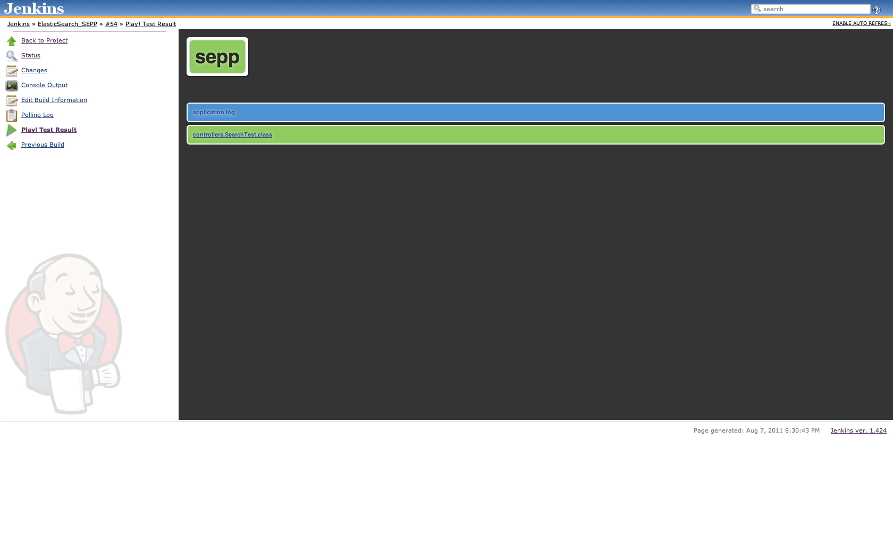
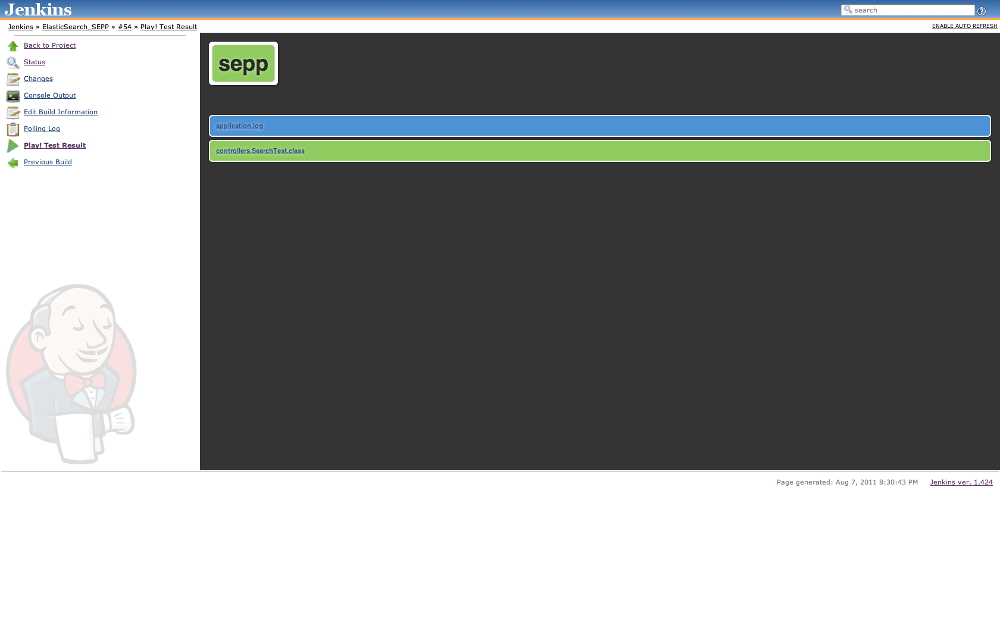

Play framework architecture

Alexander Reelsen
play new myapp
application.confroutesdependencies.ymlmessagesUser.javaMessage.javaApplication.javaindex.htmldb=fs, db=mem
db=mysql:user:pwd@database_name
GET / Application.index
GET /user/{username} Application.showUser
POST /user Application.createUser
DELETE /user/{username} Application.deleteUser
GET /public staticDir:public
public class Application extends Controller {
public static void index() {
List<User> users = User.findAll();
render(users);
}
}
public static void showUser(String username) {
User user = User.find("byUsername", username).first();
notFoundIfNull(user);
render(user);
} public static void deleteUser(String username) {
User user = User.find("byUsername", username).first();
notFoundIfNull(user);
user.delete();
index();
} public static void createUser(@Valid User user) {
if (validation.hasErrors()) {
flash.error("Invalid user data");
Application.index();
}
user = user.save();
Application.showUser(user.username);
}
public class AuthController extends Controller {
@Before(unless = "login")
public static void checkSession() {
if (!session.contains("username")) {
forbidden("You are not authorized");
}
} public void login(String username, String password) {
User user = User.find("byUsernameAndPassword",
username, Crypto.passwordHash(password)).first();
notFoundIfNull(user);
session.put("username", user);
Application.index();
}#{extends ’main.html’ /}
<ul>
#{list items:users, as:’user’}
<li>
#{a @Application.showUser(user.username)}
${user.username}
#{/a}
</li>
#{/list}
</ul>
#{form @Application.createUser()}
Username: <input type="text" name="user.username" />
Password: <input type="pass" name="user.password" />
Email: <input type="text" name="user.email" />
<input type="submit" value="Add user" />
#{/form}
doLayout, extends, includeif, ifnot, else, elseif&{’i18nVariable’} out of conf/messages.desession, flash, request, params, lang, messages, out, playpublic class SqrtExtension extends JavaExtensions {
public static Double sqrt(Number number) {
return Math.sqrt(number.doubleValue());
}
}<div>
Square root of ${x} value is: ${x.sqrt()}
</div>
@Entity public class User extends Model {
@Required @Column(unique = true)
public String username;
@Required @Email
public String email;
@Required
public String password;
}User user = User.find("byUsername", username).first();
user.password = "foobar"; // setter call
user.save();
List<User> users = User.findAll();
users.get(0).delete();
List<String> names = User.find("select u.username from User u
order by u.username desc").fetch();/* @Every("1h"), @OnApplicationStop, @On("0 0 12 * * ?") */
@OnApplicationStart
public class LoadDataJob extends Job {
public void doJob() {
/* .. do whatever you want */
}
}Future, onRedeem() is executed on arrivalplay.libs.F: Promise.waitAll(), Promise.waitAny()public static void renderPdf() {
InputStream is = await(new PdfRenderJob().now());
renderBinary(is);
}public static void getResponses() {
Promise r1 = WS.url("http://www.google.de").getAsync();
Promise r2 = WS.url("http://www.lycos.de").getAsync();
List<HttpResponse> responses =
Promise.waitAll(r1, r2).getOrNull();
render(responses);
}
Promise.waitAll(r1, r2)
String f = Cache.get("id", String.class);Cache.set("id", "someId", "5mn");memcached=enabled
memcached.host=127.0.0.1:11211/* caches the whole result */
@CacheFor("5s")
public static void time() {
/* HTTP header Cache-Control: max-age: 1 */
response.cacheFor("1s");
renderText(new Date());
}#{cache 'currentTime', for:'3s'}
${new java.util.Date()}
#{/cache}PlayPlugin and extending functionality of an application via hooksplay.PlayPlugin is the key class, has a priorityonLoad(), onApplicationStart(), afterApplicationStart(), onApplicationStop(), onConfigurationRead(), onRoutesLoaded(), onApplicationReady(), afterFixturesLoad()getStatus(), getJsonStatus()enhance(), bind(), unbind(), getMessage()onEvent, PlayPlugin.postEvent()rawInvocation(), beforeInvocation(), afterInvocation(), onInvocationException(), invocationFinally(), onInvocationSuccess()beforeActionInvocation(), onActionInvocationResult(), afterActionInvocation()loadTemplate(), overrideTemplateSource(), addTemplateExtensions(), addMimeTypes()detectChange(), detectClassesChange(), beforeDetectingChanges(), onClassesChange()serveStatic(), onRequestRouting(), routeRequest()conf/dependencies.yml
play deps --syncrequire:
- play
- play -> crud
- play -> cobertura 2.1
- org.elasticsearch -> elasticsearch 0.17.2repositories:
- sonatype:
type: iBiblio
root: "http://oss.sonatype.org/content/repositories/releases"
contains:
- org.elasticsearch -> *User(aleree):
username: alr
password: test
email : alexander@reelsen.net@Before public void setUp() {
Fixtures.deleteAll();
Fixtures.load("data.yml");
}public class BasicTest extends UnitTest {
@Test
public void testThatSomethingInTheModelWorks() {
// Model tests go here
}
}public class ApplicationTest extends FunctionalTest {
@Test
public void testThatIndexPageWorks() {
Response response = GET("/");
assertIsOk(response);
assertContentType("text/html", response);
assertCharset("UTF-8", response);
}
}#{fixture delete:'all', load:'data.yml' /}
#{selenium}
open('/')
assertNotTitle('Application error')
#{/selenium}
play auto-test 

application.name=My application
%test.application.name=Test application
%prod.application.name=Production application
play start --%prod
play statusMonitorFactory.add("CacheHitsFoo", "cnt", 1);Monitor monitor = MonitorFactory.start("RemoteApiCall");
/// … logic goes here
monitor.stop();git clone git://github.com/playframework/play play
cd play
git checkout remotes/origin/1.2.x
cd framework
ant
git clone git://github.com/spinscale/play-bidding-sample